Component Evaluation of Hybrid A2C–APF Guidance in Wind-Perturbed UAV Simulation
Hệ thống hóa toàn bộ kiến thức của paper từ đầu đến cuối: mô hình toán, từng công thức kèm giải thích
bằng lời và đơn vị, giao thức thực nghiệm, kết quả, diễn giải cơ chế, giới hạn và bài học phương pháp luận.
Nguồn: paper/latex/vnict_hybrid_main.tex (bản canonical) và gói reproducibility/.
Tác giả: Hieu Ta Chi (Thuyloi University) · Huy Nguyen Anh (Thuyloi University) · Hoa Vu Minh (Foreign Trade University)
§0Cách đọc tài liệu này
Mười sáu phần đi đúng theo trình tự của paper. Mỗi công thức có mã CT-n, kèm giải thích bằng lời, đơn vị và cạm bẫy diễn giải. Phần đối chiếu với mục trong paper nằm ở tiêu đề từng phần.
Công thức viết bằng ký hiệu Unicode trong khung monospace (trang không nhúng thư viện toán ngoài). Đối chiếu 1-1 với bản PDF: ví dụ CT-8 chính là Equation (6) của paper. Những công thức thuộc kiến thức nền mà paper không in ra (policy gradient, GAE, Wilson) được gắn nhãn nền để không nhầm là đóng góp của bài.
Hình nào là mô phỏng minh họa (không phải dữ liệu thí nghiệm) đều được ghi chú đỏ ngay trên hình.
| # | Phần | Nội dung chính | Mục trong paper |
|---|---|---|---|
| 1 | Vấn đề & câu hỏi nghiên cứu | Vì sao lai A2C + APF; paper tuyên bố và KHÔNG tuyên bố điều gì | §I, §II |
| 2 | Kiến thức nền & bảng ký hiệu | RL, APF, động lực học, gió, AABB, thống kê — cần nắm gì trước khi đọc | §II |
| 3 | MDP: quan sát & hành động | Observation 12 chiều; hành động là LỰC chuẩn hóa, không phải gia tốc | §III-A |
| 4 | Động lực học point-mass | Lực, drag tương đối, Euler bán ẩn, clamp độ cao, chân trời H = 1507 | §III-B, III-C |
| 5 | APF & blending thích ứng | Lực hút, lực đẩy theo tâm AABB, chuẩn hóa rồi clip, λ theo khoảng cách | §III-D |
| 6 | Hàm thưởng | Sáu số hạng; vì sao phạt độ cao là code chết; hai quy ước khoảng cách | §III-E |
| 7 | Mô hình gió AR(1) | Nhiễu màu, hệ số √(1−φ²), ma trận tương quan, giới hạn Dryden-lite | §III-F |
| 8 | A2C: nền thuật toán & huấn luyện | Actor–critic, GAE, entropy; siêu tham số; 5M bước; seed không bitwise | §III-G |
| 9 | Thiết kế thực nghiệm H0–H4 | Cấu trúc lồng nhau, 1000 rollout, 50 slot → 32 seed thật, ghép cặp | §IV-A |
| 10 | Chỉ số đo & công thức thống kê | Wilson, efficiency, clearance, jerk/accel, Wilcoxon, Cohen's dz | §IV-B |
| 11 | Kết quả | Bảng số liệu + biểu đồ; mean vs median; H2 jitter thấp ≠ tốt | §V |
| 12 | Diễn giải cơ chế | Lịch λ, vì sao barrier = timeout còn corridor = collision, vì sao H2 chết | §V-D, §VI |
| 13 | Threats to validity | Internal / measurement / statistical / external — 12 mục | §VII |
| 14 | Kết luận & hướng tương lai | Ba câu dữ liệu ủng hộ; sáu việc cần làm tiếp | §VIII |
| 15 | Reproducibility & audit trail | Ledger, SHA-256, traceability code↔paper, vì sao CONDITIONAL PASS | gói reproducibility/ |
| 16 | Thuật ngữ & câu hỏi ôn tập | Glossary Anh–Việt; 18 câu hỏi theo ba mức; bài học phương pháp luận | — |
§1Vấn đề nghiên cứu và câu hỏi được kiểm soát
Paper không đề xuất thuật toán mới. Nó trả lời một câu hỏi hẹp, đo được, trên một implementation cố định. §I · §II
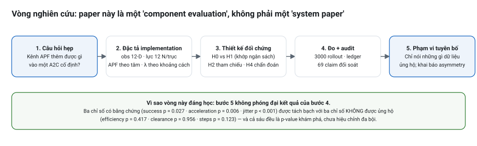
Ba yêu cầu đồng thời của bay thấp trong môi trường chật
- Tiến bộ liên tục về đích — cần một chính sách có mục tiêu dài hạn.
- Tránh va chạm — cần phản xạ cục bộ với hình học vật cản.
- Điều khiển không biến đổi đột ngột dưới nhiễu — cần lệnh mượt khi có gió.
| Họ phương pháp | Điểm mạnh | Điểm yếu theo paper | Hệ quả thiết kế |
|---|---|---|---|
| Planner lấy mẫu (RRT, RRT*) | Quy hoạch tốt khi biết map; bảo đảm tiệm cận tối ưu | Cấu trúc thông tin khác: cần map biết trước, cần replanning; không phải bộ điều khiển phản xạ vòng kín | Chỉ làm mốc tham chiếu, không so sánh trực tiếp |
| APF (Khatib 1986) | Rẻ, tính online, phản xạ tức thời | Local minima, dao động, nhạy gain | Dùng làm guidance prior, không làm planner hoàn chỉnh |
| RL (A2C, PPO, SAC) | Học ánh xạ state → action; thích ứng với nhiễu | Kết quả phụ thuộc seed, reward, observation, termination; khó quy kết nguyên nhân | Chọn A2C vì ÍT thành phần nhất → dễ quy kết đóng góp thành phần khác |
| APF + RL (2024–2025) | Đã phổ biến: shaping reward, ràng buộc action, blend trực tiếp | Việc ghép tự nó không còn mới | Chuyển trọng tâm sang ĐÁNH GIÁ THÀNH PHẦN |
“Một kênh dẫn hướng APF thêm được giá trị đo lường nào vào một implementation A2C dẫn đường cố định?”
Đóng góp 1 — Bộ điều khiển được đặc tả đầy đủ
Controller A2C–APF với observation 12 chiều, ngữ nghĩa lực chuẩn hóa, động lực học point-mass, gió tương quan và blending thích ứng theo khoảng cách.
Đóng góp 2 — Chiến dịch 4 map tách bạch thành phần
H0 hybrid, H1 chỉ A2C (khớp ngân sách và giao thức), H2 chỉ APF, H4 chẩn đoán nội suy cùng lưới.
Đóng góp 3 — Phân tích ghép cặp ở cấp training run
Suy luận trên 20 đơn vị (map × training run) và accounting đầy đủ kết thúc episode, thay vì coi 1000 rollout là độc lập.
- Không đề xuất thuật toán RL mới và không đề xuất khung quy hoạch đường tổng quát.
- Không xếp hạng với PPO, SAC hay RRT — vì chưa có tuning riêng, ngân sách ngang nhau và nhiều seed cho từng thuật toán.
- Không tuyên bố đường bay ngắn hơn, an toàn hơn (clearance) hay nhanh hơn — các khác biệt đó KHÔNG được dữ liệu ủng hộ.
Observation của A2C chỉ có [vị trí, vận tốc, dịch chuyển tới đích, gió] — không có hình học vật cản. H0 nhận hình học vật cản thông qua kênh APF; H1 không nhận gì cả. Vậy nên so sánh H0−H1 đo giá trị của cả kênh APF cùng với đầu vào hình học đặc quyền của nó, chứ không cô lập được “phép tính trường thế năng”. Muốn cô lập, phải cho H1 một đặc trưng vật cản tương đương mà không có blend APF.
§2Kiến thức nền và bảng ký hiệu
Sinh viên cần nắm cột giữa trước khi đọc phần công thức. Mỗi khái niệm đều được dùng ở một mục cụ thể của paper.
| Khối kiến thức | Cần nắm điều gì | Dùng ở đâu |
|---|---|---|
| MDP / RL cơ bản | Trạng thái, hành động, phần thưởng, γ; policy π(a|s); mục tiêu tối đa E[Σ γᵗ rₜ] | Nền của §3 và §6 |
| Policy gradient & actor–critic | ∇J ≈ E[∇log π(a|s)·A(s,a)]; critic V(s) giảm phương sai của advantage | Vì sao chọn A2C; §8 |
| GAE(γ, λ) | Ưu thế ước lượng bằng tổng có chiết khấu của TD-error; λ = 0.95 cân bằng bias/variance | Siêu tham số huấn luyện A2C |
| Artificial Potential Field | Trường hút kéo về đích + trường đẩy quanh vật cản; điểm yếu: local minima, dao động, nhạy gain | §5 và lý do H2 thất bại |
| Động lực học point-mass | F = m·a; lực cản tỉ lệ vận tốc tương đối; tích phân Euler bán ẩn | §4 |
| Quá trình ngẫu nhiên AR(1) | Nhiễu có màu (tương quan thời gian) thay vì nhiễu trắng; phương sai dừng | §7 mô hình gió |
| Hình học AABB & swept collision | Hộp chữ nhật trục aligned; phép thử slab trên đoạn pₜ → pₜ₊₁ để chống tunneling | §4 ngữ nghĩa va chạm |
| Nội suy cubic spline | Đa thức bậc 3 từng khúc, liên tục C²; dùng làm mượt quỹ đạo rời rạc | H4 — chẩn đoán hậu xử lý |
| Thống kê suy luận | Khoảng tin cậy Wilson; Wilcoxon signed-rank ghép cặp; Cohen's dz; p-value khám phá & đa bội | §10 và toàn bộ §11 |
| Đơn vị suy luận & pseudoreplication | Phân biệt rollout (mô tả) với (map × training run) (suy luận); lặp seed làm phồng n | Điểm phương pháp luận quan trọng nhất |
Bảng ký hiệu toán học đầy đủ (23 ký hiệu)
| Ký hiệu | Ý nghĩa và đơn vị |
|---|---|
pₜ, v ∈ ℝ³ | vị trí và vận tốc UAV tại bước t (m; m/s) |
g ∈ ℝ³ | vị trí đích; g − pₜ là vector dịch chuyển tới đích |
wₜ ∈ ℝ³ | vận tốc gió tại bước t (m/s) — là vận tốc KHÔNG KHÍ, không phải lực |
sₜ ∈ ℝ¹² | quan sát của A2C: [pₜ, vₜ, g − pₜ, wₜ] |
aₜᴬ²ᶜ ∈ [−1,1]³ | hành động policy: lệnh LỰC chuẩn hóa theo từng trục |
uₜ ∈ [−1,1]³ | lệnh chuẩn hóa sau khi trộn (hybrid) — đầu vào của động lực học |
λₜ ∈ [0.15, 0.55] | trọng số trộn APF, phụ thuộc khoảng cách tới đích |
cᵢ ∈ ℝ³ | tâm của vật cản AABB thứ i |
dᵢ | khoảng cách từ UAV tới TÂM vật cản i (khác clearance bề mặt) |
δₜ | clearance có dấu tới BỀ MẶT AABB gần nhất (dùng trong reward và metric) |
d₀ = 6 m | bán kính ảnh hưởng của lực đẩy APF |
k_att = 0.04, k_rep = 18 | hệ số gain hút / đẩy của APF |
m = 0.5 kg, k_d = 0.12 | khối lượng và hệ số cản tuyến tính |
g₀ = 9.81 m/s², Δt = 0.1 s | gia tốc trọng trường và bước tích phân |
F_max = 12 N | giới hạn lực THEO TỪNG TRỤC (không phải theo chuẩn vector) |
H = 1507 | số transition tối đa của một episode (chân trời) |
nₜ | số transition đã dùng tới thời điểm t |
φ = exp(−Δt/τ) | hệ số suy giảm của quá trình AR(1) mô hình gió |
τ = 0.9 s | hằng số thời gian tương quan của gió |
σ_gust = 1.2 m/s | độ lệch chuẩn dừng của thành phần gió giật ngang |
γ = 0.99, λ_GAE = 0.95 | chiết khấu RL và tham số GAE |
E | hiệu suất đường bay thành công ∈ (0, 1] |
d_z = Δ̄ / s_Δ | cỡ hiệu ứng ghép cặp (Cohen's dz) |
z = 1.96 | phân vị chuẩn cho khoảng tin cậy 95% (Wilson) |
§3MDP: quan sát và ngữ nghĩa hành động
Phần quyết định paper đo được cái gì. Đọc kỹ hai công thức đầu tiên. §III-A · traceability #1, #2, #6
Bài toán được phát biểu thành một MDP episodic M = (S, A, P, R, γ) với γ = 0.99. Mỗi bước, môi trường phơi ra trạng thái:
sₜ = [ pₜ , vₜ , g − pₜ , wₜ ] ∈ ℝ¹²
└─3─┘ └─3─┘ └───3───┘ └─3─┘
vị trí vận dịch chuyển gió
tốc tới đích
- Vì sao dùng
g − pₜthay vìg: đây là vector dịch chuyển tương đối, giúp policy bất biến với vị trí tuyệt đối của đích (map 300 m có đích ở (300, 150, 5)); mạng không phải học một hằng số tọa độ. - Không có thành phần vật cản nào: không khoảng cách, không góc, không occupancy. Vật cản chỉ đi vào bốn nơi: APF, số hạng clearance của reward, phép thử va chạm, và các metric offline.
- Hệ quả phương pháp luận: mọi khác biệt H0−H1 đều bị trộn lẫn với lượng thông tin bổ sung mà kênh APF mang vào (xem callout ở §1).
wₜlà vận tốc không khí, không phải lực — xem CT-4.
aₜᴬ²ᶜ ∈ [−1, 1]³ (policy output, liên tục) F_cmd = 12 N × clip(aₜᴬ², −1, 1) (clip THEO TỪNG TRỤC) ⇒ ‖F_cmd‖ tối đa = 12·√3 ≈ 20.78 N (không phải 12 N)
- Cạm bẫy 1: giới hạn 12 N áp dụng cho từng trục, không áp cho chuẩn vector. Vector lực thực tế có thể đạt ~20.78 N theo hướng chéo. Mô tả sai chỗ này sẽ làm sai toàn bộ diễn giải về gia tốc.
- Cạm bẫy 2: đây là lực, nên gia tốc còn phụ thuộc khối lượng, trọng lực, drag và gió (CT-4). Không được đọc
a = 1thành “gia tốc 1 m/s²”. - Gia tốc ngang lớn nhất có thể ra lệnh: 12 N / 0.5 kg = 24 m/s² — gần 2.4 g. Multirotor thật không đạt được; đây là lý do paper từ chối nói về flyability.
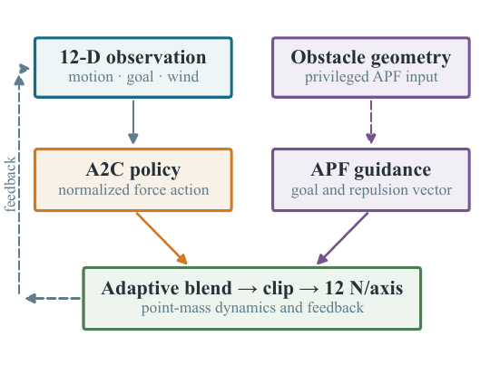
§4Động lực học point-mass, chân trời episode và ngữ nghĩa va chạm
Bốn công thức vật lý + một công thức chân trời. Tham số: m = 0.5 kg, k_d = 0.12, g₀ = 9.81 m/s², Δt = 0.1 s. §III-B, III-C · traceability #7–#12, #20
Fₜ = 12 · clip(uₜ, −1, 1) − m · g₀ · e_z với e_z là vector đơn vị hướng lên (+z); trọng lực luôn kéo xuống uₜ là lệnh CHUẨN HÓA sau khi đã trộn A2C và APF (xem CT-14)
aₜ = ( Fₜ − k_d · (vₜ − wₜ) ) / m (vₜ − wₜ) = vận tốc của UAV so với khối không khí = "air velocity"
- Đây là điểm mô hình tinh tế nhất. Gió KHÔNG được cộng thẳng vào vị trí. Nó đi vào qua drag: nếu UAV bay đúng bằng vận tốc gió (vₜ = w) thì drag = 0, tức “bay theo gió” thì không cảm nhận lực cản.
- So với mô hình cũ trong README gốc của repo nghiên cứu (
aₓ = (Fₓ + 0.3·wₓ − k_d·vₓ)/m): ở đó gió là lực cộng trực tiếp. Hai mô hình KHÁC nhau về vật lý — README gốc đã lỗi thời so với paper. - Với k_d = 0.12 và m = 0.5 kg, vận tốc tới hạn khi lực đẩy cân bằng drag là 12/0.12 = 100 m/s theo một trục — mô hình gần như không có giới hạn tốc độ thực tế.
vₜ₊₁ = vₜ + aₜ · Δt (cập nhật VẬN TỐC trước) pₜ₊₁ = pₜ + vₜ₊₁ · Δt (rồi dùng vận tốc MỚI để cập nhật vị trí) Δt = 0.1 s ⇒ 1 transition = 0.1 s thời gian mô phỏng
pₜ₊₁ = pₜ + v·Δt) ở chỗ dùng vₜ₊₁. Euler bán ẩn bảo toàn năng lượng tốt hơn cho hệ có thành phần bảo thủ, ít bị “nổ” số học khi bước tích phân lớn — hợp lý cho mô phỏng RL chạy hàng triệu bước.z_cl = clamp(zₜ₊₁, 5 m, 6 m) nếu z_cl ≠ zₜ₊₁ (clamp kích hoạt): v_z ← 0 ⇒ không gian bay thực chất là một "tấm slab" 2.5-D dày 1 m ⇒ hệ quả: số hạng phạt độ cao r_z trong reward là CODE CHẾT (xem CT-18)
H = ⌊ ( ‖g_xy − p₀,xy‖ / (v_ref · Δt) ) · 1.8 ⌋ + 300 , v_ref = 5 m/s Với map 300 m: start (0, 0, 5), goal (300, 150, 5) ‖g_xy − p₀,xy‖ = √(300² + 150²) = 335.41 m H = ⌊(335.41 / (5 · 0.1)) · 1.8⌋ + 300 = ⌊670.82 · 1.8⌋ + 300 = ⌊1207.48⌋ + 300 = 1507 ⇒ thời gian tối đa = 1507 × 0.1 s ≈ 150.7 s
- Ý nghĩa từng thành phần:
‖g_xy − p₀,xy‖/(v_ref·Δt)là số bước nếu bay thẳng với vận tốc tham chiếu 5 m/s; hệ số1.8là dư địa cho đường vòng tránh vật cản và gió thổi lệch;+300bước là đệm cố định cho pha tiếp cận đích. - Chân trời TỰ ĐỘNG co giãn theo kích thước map — cùng một giao thức áp dụng được cho map ngắn/dài mà không chỉnh tay.
- Giá trị 1507 (không phải 500 như tài liệu cũ) giải thích vì sao H1 có episode chạy tới trần và vì sao SD của steps lên tới 451.0.
collision = swept_AABB(pₜ → pₜ₊₁, obstacle_i, radius = 0) với mọi i success = ( ‖g − p_T‖ < 3 m ) AND ( NOT collision ) timeout = hết H transition mà chưa success Thứ tự ưu tiên: COLLISION được xét TRƯỚC success ⇒ chạm vật cản đúng lúc vào trong 3 m → tính là collision
- Swept collision (phép thử slab): kiểm tra cả ĐOẠN thẳng từ pₜ đến pₜ₊₁ chứ không chỉ điểm cuối. Với Δt = 0.1 s và vận tốc ~10 m/s, mỗi bước UAV đi ~1 m — đủ “xuyên hầm” qua thành mỏng nếu chỉ test điểm cuối.
- Bán kính phồng UAV = 0: UAV được coi là một điểm. Giả định lạc quan, cần nêu khi bàn về an toàn.
- Accounting đầy đủ: success + collision + timeout = 1000 cho mỗi cấu hình; có test tự động kiểm tra “đúng một trạng thái kết thúc trên mỗi dòng” (0 vi phạm).
- Vị trí ban đầu có nhiễu: p₀ = (0, 0, 5) cộng nhiễu đều U(−0.5, +0.5) m từng tọa độ trước khi clamp độ cao — tránh policy học thuộc một điểm khởi đầu duy nhất.
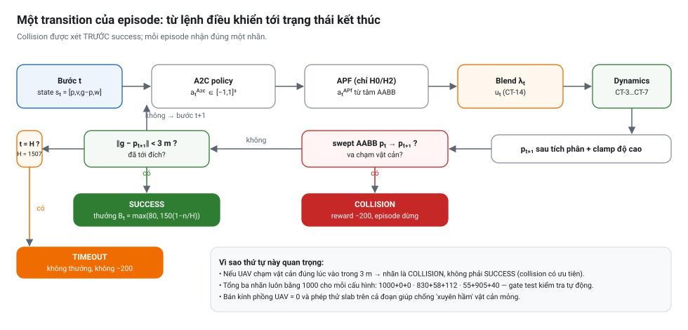
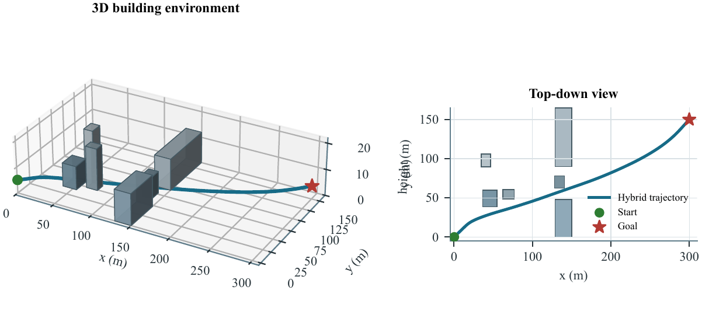
§5Artificial Potential Field và cơ chế trộn thích ứng
Trái tim kỹ thuật của paper: ba công thức APF + hai công thức blend. Chú ý quy ước khoảng cách tới TÂM vật cản. §III-D · traceability #13–#17
qₜ = g − pₜ (vector dịch chuyển tới đích) F_att(pₜ) = k_att · qₜ / (‖qₜ‖ + ε) , k_att = 0.04 , ε = 10⁻⁶ ⇒ ‖F_att‖ ≈ 0.04 (hằng số, không phụ thuộc khoảng cách) — chỉ giữ HƯỚNG
‖qₜ‖ nên lực hút không tăng khi càng gần đích — tránh hiện tượng “lao vào đích” với vận tốc lớn. ε = 10⁻⁶ chỉ để chống chia 0 khi UAV đứng đúng tại đích.dᵢ = ‖pₜ − cᵢ‖ + ε (cᵢ = TÂM của AABB thứ i, không phải điểm gần nhất trên mặt)
⎧ k_rep · (1/dᵢ − 1/d₀) · (pₜ − cᵢ)/dᵢ³ nếu dᵢ < d₀
F_rep,ᵢ(pₜ) = ⎨
⎩ 0 nếu dᵢ ≥ d₀
với k_rep = 18 , d₀ = 6 m
- Đọc công thức này thế nào:
(1/dᵢ − 1/d₀)là độ lớn thế đẩy, bằng 0 đúng tại biên d₀ và tiến tới ∞ khi dᵢ → 0;(pₜ − cᵢ)/dᵢlà vector đơn vị chỉ hướng đẩy ra xa tâm. Nhân hai cái lại với một1/dᵢ²nữa (gradient của thế) → ra số mũdᵢ³ở mẫu. - Vai trò của d₀ = 6 m: APF chỉ là phản xạ CỤC BỘ. Ngoài 6 m tính từ tâm vật cản, lực đẩy bằng đúng 0 → UAV không bị “đẩy” bởi cả bản đồ, chỉ bởi thứ ở ngay cạnh.
- Lỗi thiết kế được paper tự khai báo: vì dᵢ đo tới TÂM, một khối hộp lớn có thể ở rất gần mà APF vẫn im lặng.
Một khối AABB cạnh 20 m, tâm cách UAV 12 m. Khoảng cách tới MẶT gần nhất chỉ là 12 − 10 = 2 m — tức sắp đâm.
Nhưng vì dᵢ = 12 m ≥ d₀ = 6 m nên F_rep = 0: APF hoàn toàn không phản ứng.
Ngược lại, metric clearance mà paper báo cáo lại dùng khoảng cách BỀ MẶT (2 m). Hai đại lượng khác nhau này là lời
giải thích cơ chế chính cho tỉ lệ va chạm 90.5% của H2.
F_APF = F_att + Σᵢ F_rep,ᵢ nếu ‖F_APF‖ > 1: F_APF ← F_APF / ‖F_APF‖ (chỉ khi vượt 1) aₜᴬᴾᶠ = clip(F_APF, −1, 1) (clip theo từng thành phần) THỨ TỰ QUAN TRỌNG: normalize TRƯỚC, clip SAU
uₜ = (1 − λₜ) · aₜᴬ²ᶜ + λₜ · aᴬᴾᶠ λₜ = clip( 1 − ‖g − pₜ‖/300 , 0.15 , 0.55 ) khoảng cách tới đích 335.4 m 300 m 255 m 180 m 135 m 0 m λₜ (giá trị thực tế) 0.15 0.15 0.15 0.40 0.55 0.55 ý nghĩa tin RL ←────────────────────────→ tin APF
- Vì sao là trộn lồi: cả hai thành phần đều nằm trong [−1,1]³ và λ ∈ [0,1], nên uₜ cũng nằm trong [−1,1]³ — không cần clip lại và không bao giờ vượt giới hạn lực.
- Logic điều khiển: ở pha hành trình xa đích, bài toán chủ yếu là “đi tới” → tin policy học được (λ = 0.15). Ở pha tiếp cận, hình học vật cản quanh khe hở quan trọng hơn → tăng vai trò APF (λ tới 0.55).
- Giả thuyết cơ chế: vì là hỗn hợp lồi, APF có thể đã “làm dịu” những thay đổi lệnh lớn của A2C ở vùng cuối → giải thích jitter thấp hơn. Paper nói rõ đây chỉ là GIẢ THUYẾT CHẨN ĐOÁN vì không có action trace tách riêng hai kênh.
- Cấu hình đối chứng: H1 đặt
policy_mode = "a2c"nên bỏ hẳn phép trộn (tương đương λ = 0, manifest đặtapf_weight = 0.0); H2 đặtpolicy_mode = "apf"nênuₜ = aₜᴬᴾᶠvới action của policy là vector 0.
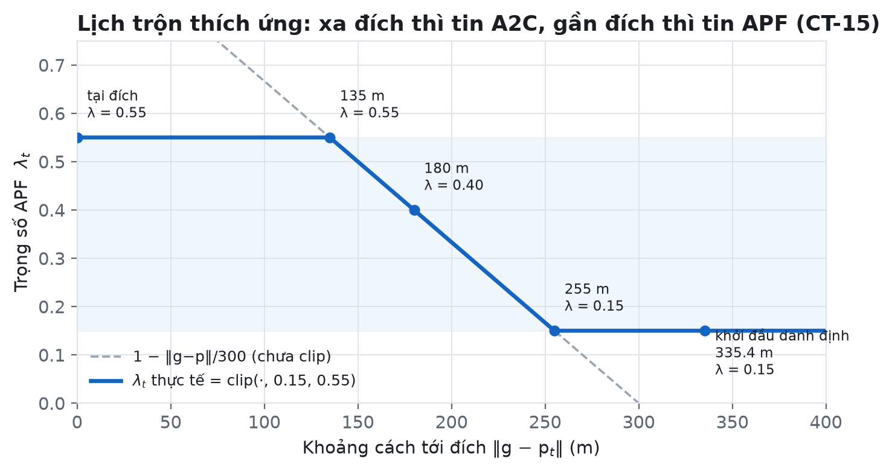
§6Hàm thưởng — từng số hạng và từng con số
Sáu thành phần. Chú ý hai điểm: dải clearance chỉ thưởng chứ không phạt, và số hạng độ cao không bao giờ chạy. §III-E · traceability #13, #18, #19
rₜ = 3·(dₜ₋₁ − dₜ) ① shaping tiến bộ về đích − 0.05 ② phạt thời gian (mỗi bước) − 200·𝟙[collision] ③ phạt va chạm + Bₜ·𝟙[success] ④ thưởng về đích (xem CT-17) + 0.3·(δₜ − 2)·𝟙[2 < δₜ < 8] ⑤ thưởng giữ khoảng cách an toàn + r_z ⑥ phạt vượt dải độ cao (xem CT-18 — BẤT HOẠT) với dₜ = ‖g − pₜ‖ tính SAU transition, δₜ = clearance CÓ DẤU tới bề mặt AABB gần nhất
| # | Số hạng | Đơn vị / dải | Giải thích và hệ quả |
|---|---|---|---|
| ① | 3·(dₜ₋₁ − dₜ) | điểm / mét tiến lại gần | Dạng potential-based shaping: chỉ thưởng cho SỰ THAY ĐỔI khoảng cách nên không tạo cực tiểu giả. Tiến 1 m được +3, lùi 1 m bị −3. Tín hiệu dày duy nhất dẫn dắt policy ở xa đích. |
| ② | −0.05 / bước | điểm | Chống lảng vảng. Với H = 1507 bước, tổng phạt tối đa ≈ −75 điểm — nhỏ hơn nhiều so với thưởng về đích (≥ 80) nên không khuyến khích tự kết thúc sớm. |
| ③ | −200 khi va chạm | điểm | Phạt thưa nhưng lớn gấp ~2.5 lần thưởng về đích tối đa → gradient ưu tiên an toàn. Vì thưa nên policy chỉ học được qua những lần thực sự đâm. |
| ④ | Bₜ khi về đích | 80 → 150 điểm | Xem CT-17: thưởng GIẢM dần theo số bước đã dùng nhưng có sàn 80 điểm. |
| ⑤ | 0.3·(δₜ − 2) trong dải 2–8 m | tối đa +1.8 điểm/bước | Tăng dần theo clearance trong dải → khuyến khích đi giữa chứ không sát vật cản. NGOÀI dải (δ ≥ 8) không thưởng thêm; DƯỚI 2 m KHÔNG có phạt trực tiếp nào ngoài ③ khi thực sự đâm — một khoảng trống thiết kế đáng phê bình. |
| ⑥ | r_z | −15·(khoảng vượt) | CODE CHẾT — xem CT-18. |
Bₜ = max( 80 , 150 · (1 − nₜ/H) ) bay rất nhanh (nₜ → 0) : Bₜ → 150 bay hết chân trời (nₜ = H) : 150·0 = 0 → nhưng max() ép lên 80 điểm hoà vốn : 150·(1 − nₜ/H) = 80 ⇒ nₜ = 0.4667·H ≈ 703 bước
max(80, ·): đảm bảo về đích LUÔN có lãi ròng so với va chạm (−200) hoặc timeout (0), kể cả khi bay chậm. Nếu không có sàn này, một episode chậm sẽ nhận thưởng ~0 và policy có thể học cách “kết thúc sớm” để tránh phạt thời gian.r_z = −15·(5 − z) nếu z < 5 m r_z = −15·(z − 6) nếu z > 6 m r_z = 0 nếu 5 ≤ z ≤ 6 NHƯNG: độ cao đã bị clamp về [5, 6] ở CT-7 TRƯỚC khi reward đọc z ⇒ tại thời điểm tính reward luôn có z ∈ [5, 6] ⇒ cả hai nhánh phạt không thể kích hoạt
Vì nguyên tắc implementation alignment (Henderson 2018): mô tả controller phải khớp CHÍNH XÁC với code đã chạy, kể cả phần không hoạt động. Giấu nó đi sẽ khiến người tái lập gặp một reward function khác. Muốn số hạng này có tác dụng, phải tính reward TRƯỚC khi clamp, hoặc bỏ clamp và để UAV thực sự bay ra khỏi dải.
| Đại lượng | Đo tới đâu | Dùng ở đâu | Hệ quả |
|---|---|---|---|
dᵢ | TÂM của AABB | Lực đẩy APF (CT-11, CT-12) | Under-repel với khối lớn; APF có thể im lặng khi sắp đâm |
δₜ | BỀ MẶT gần nhất của AABB (có dấu) | Số hạng ⑤ của reward và metric clearance báo cáo trong paper | Phản ánh đúng rủi ro va chạm |
§7Mô hình gió tương quan AR(1) (Dryden-lite)
Gió là nhiễu CÓ MÀU, không phải nhiễu trắng. Bốn công thức và một chứng minh ngắn về phương sai dừng. §III-F · seed_provenance.md
φ = exp(−Δt / τ) , τ = 0.9 s , Δt = 0.1 s φ = exp(−0.1/0.9) = exp(−0.1111) ≈ 0.8948 (giá trị suy ra, paper không in số)
ηₜ = L · ξₜ , ξₜ ~ N(0, I₃)
L·Lᵀ có: tương quan chéo ngang (x↔y) = 0.35
tương quan ngang–dọc = 0
hệ số phương sai trục dọc = 0.09 (⇒ tỉ lệ std dọc = √0.09 = 0.3)
- L là phân tích Cholesky của ma trận hiệp phương sai mong muốn — cách chuẩn để biến nhiễu trắng độc lập thành nhiễu có cấu trúc tương quan.
- Tương quan ngang 0.35: gió tạt theo x thường đi kèm thành phần theo y — mô phỏng luồng gió thổi xiên, không phải ba trục độc lập.
- Hệ số dọc 0.09: nhiễu dọc yếu hơn nhiều (0.3 lần), hợp với thực tế rối khí quyển ngang mạnh hơn dọc ở tầng thấp. Kết hợp với clamp độ cao [5, 6] m, trục z gần như bị khống chế.
gₜ₊₁ʷ = φ · gₜʷ + 1.2 · √(1 − φ²) · ηₜ wₜ = w_base + gₜʷ w_base = [ 2·cos θ , 2·sin θ , 0 ] , θ ~ U(0, 2π) (lấy mẫu MỘT lần tại reset)
Gọi Var(gₜʷ) = σ². Ở trạng thái dừng: σ² = φ²σ² + 1.2²(1 − φ²)
⇒ σ²(1 − φ²) = 1.2²(1 − φ²) ⇒ σ² = 1.2² ⇒ σ = 1.2 m/s
Nếu bỏ hệ số này, biên độ gió giật sẽ trôi theo φ và phụ thuộc độ dài episode — mỗi map sẽ có một “mức gió” khác nhau, làm hỏng khả năng so sánh. Với φ ≈ 0.8948 thì hệ số nhân thực tế là 1.2 × √(1 − 0.8007) ≈ 1.2 × 0.4465 ≈ 0.536.
- Quy mô nhiễu thực tế: gió nền 2 m/s + gió giật std 1.2 m/s ngang (0.36 m/s dọc) ⇒ tổng vận tốc gió điển hình 2–3.5 m/s, tức ~20–35% tốc độ tham chiếu 5 m/s. Đáng kể nhưng không cực đoan.
- Một realization gió cho cả episode: hướng gió nền và chuỗi nhiễu AR(1) đều lấy từ RNG của env, seed bằng numerical seed. Vì vậy H0 và H1 ở cùng slot đánh giá gặp ĐÚNG MỘT cơn gió — điều kiện để ghép cặp hợp lệ.
- Giới hạn paper tự nêu: đây không phải phổ Dryden đã kiểm chứng, cũng không phải mô hình khí động học đô thị. Vì không có điều kiện no-wind hay mức gió khác, paper KHÔNG thiết lập được robustness theo cường độ gió — mặc dù tiêu đề có chữ “Wind-Perturbed”. H3 (no-wind) và H5 (strong-wind) đã ĐỊNH NGHĨA trong manifest nhưng bị loại khỏi tập bằng chứng.
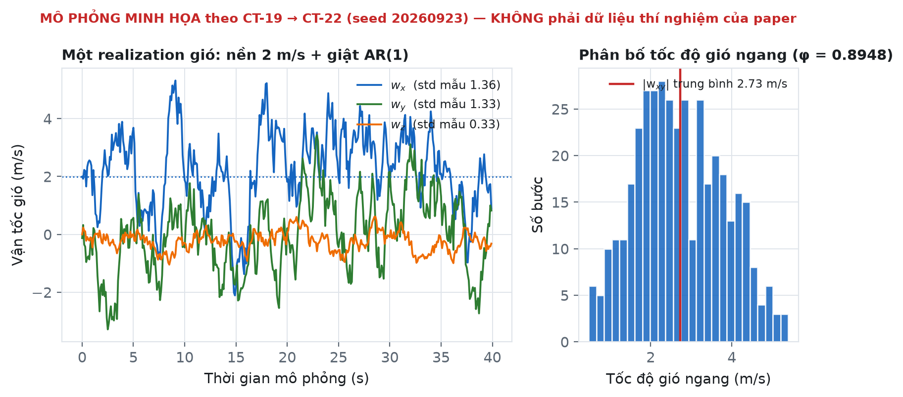
§8A2C: nền thuật toán và cấu hình huấn luyện
Ba công thức nền (KHÔNG in trong paper — kiến thức bổ trợ để hiểu vì sao chọn A2C) và bảng siêu tham số đã dùng. §III-G · seed_provenance.md · computational_requirements.md
Chúng giúp hiểu “advantage” trong tên gọi A2C nghĩa là gì và entropy coefficient 0.02 tác động vào đâu.
∇θ J(θ) = E[ ∇θ log πθ(aₜ|s) ·  ] Âₜ = Qπ(sₜ,aₜ) − Vπ(sₜ) (advantage: hành động này tốt hơn trung bình bao nhiêu) ⇒ log π được đẩy LÊN nếu  > 0 và kéo XUỐNG nếu  < 0
L(θ, φ) = − E[ log πθ(aₜ|s) · Â ] (actor: leo đồi chính sách)
+ c₁ · E[ ( Vφ(sₜ) − Rₜ )² ] (critic: hồi quy giá trị, c₁ = 0.5)
− c₂ · H[ πθ(·|sₜ) ] (entropy: khuyến khích khám phá, c₂ = 0.02)
δₜ = rₜ + γ·Vφ(sₜ₊₁) − Vφ(sₜ) (TD-error) Âₜᴳᴬᴱ(γ,λ) = Σₗ₌₀^∞ (γλ)ˡ · δₜ₊ₗ (γ = 0.99, λ_GAE = 0.95) λ → 0 : Â ≈ δₜ (bias cao, phương sai thấp) λ → 1 : Â ≈ Monte-Carlo (bias thấp, phương sai cao) λ = 0.95: điểm cân bằng thực nghiệm
| Tham số | Giá trị | Vai trò / vì sao chọn |
|---|---|---|
| Thư viện & policy | Stable-Baselines3, MlpPolicy | Mạng MLP chuẩn, ít thành phần → dễ quy kết nguyên nhân; SB3 là implementation được kiểm chứng rộng rãi |
| Thiết bị | CPU (device = 'cpu' cưỡng bức) | A2C với observation 12 chiều không cần GPU; loại bỏ biến thiên do CUDA |
| Learning rate | 3 × 10⁻⁴ | Giá trị mặc định phổ biến cho actor–critic |
| n_steps (rollout) | 256 | On-policy: thu 256 bước rồi cập nhật |
| γ (chiết khấu) | 0.99 | Tầm nhìn hiệu dụng ~100 bước = 10 s mô phỏng |
| λ (GAE) | 0.95 | Cân bằng bias/variance cho advantage |
| Entropy coefficient | 0.02 | Giữ khám phá; quá nhỏ → policy sập sớm vào nghiệm dao động |
| Max gradient norm | 0.5 | Cắt gradient, ổn định huấn luyện khi có reward −200 thưa và lớn |
| Ngân sách huấn luyện | 5.000.000 bước / unit | Tổng 40 unit học được (H0 + H1) = 200 triệu bước |
| Số env song song khi train | 1 env (n_envs = 1) | Đúng như paper: run_rigorous_manifest.py:146 đặt n_envs = 1 cho chiến dịch canonical. Pipeline so sánh cũ có preset n_envs = 4 cho chế độ 300k bước — đó KHÔNG phải run dùng cho paper |
| Seed huấn luyện | 101, 211, 307, 401, 503 | 5 model ĐỘC LẬP cho mỗi map — không phải 5 checkpoint của một lần chạy |
| Chính sách khi đánh giá | deterministic = True | Loại bỏ phương sai lấy mẫu hành động để đo đúng chất lượng policy |
- “Checkpoint” là từ sai. Code (
train_model) huấn luyện một model MỚI từ đầu cho mỗi cặp (map, seed). Paper canonical đã dùng “five independently trained runs (models) per map”. - PyTorch không được seed tường minh. Chỉ có
random,numpyvà VecEnv nhận training seed; không cótorch.manual_seed. Do đó huấn luyện lại từ đầu KHÔNG tái lập bitwise. Đánh giá lại từ checkpoint đã lưu thì tất định. - Chi phí tính toán: manifest dự phóng ~44.8 ngày chạy TUẦN TỰ cho toàn bộ ma trận huấn luyện được (4 thuật toán × 5 map × 5 seed). Phần bằng chứng thực tế chỉ là tập con A2C 4 map, song song hóa được trên nhiều nhân. Máy tham chiếu: Ryzen 9 9950X (16C/32T), 64 GB RAM, RTX 3090 (không dùng cho A2C).
§9Thiết kế thực nghiệm: H0–H4, cấu trúc lồng nhau và số học của mẫu
Phần dễ bị reviewer tấn công nhất — và cũng là phần paper xử lý cẩn thận nhất. §IV-A · experimental_design.md
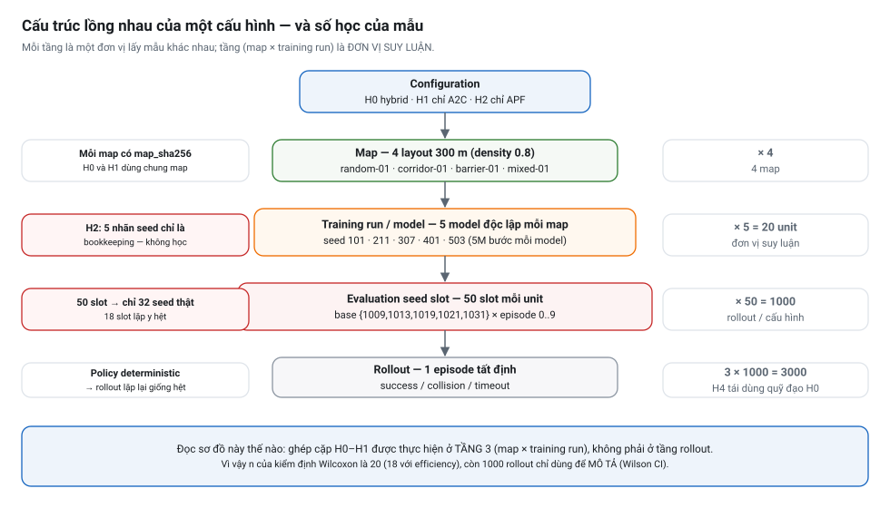
| ID | Loại | Map / unit | Huấn luyện | Rollout | Học? | Ghi chú diễn giải |
|---|---|---|---|---|---|---|
| H0 | Hybrid: A2C + APF blend | 4 map / 20 unit | 5M bước × 20 | 1000 | Có | Cấu hình chính được đề xuất |
| H1 | Chỉ A2C (tắt blend APF) | 4 map / 20 unit | 5M bước × 20 | 1000 | Có | Đối chứng GHÉP CẶP; khớp ngân sách, map, realization đánh giá — nhưng KHÔNG khớp thông tin vật cản |
| H2 | Chỉ APF (không học) | 4 map / nhãn 5 seed | 0 | 1000 | Không | 5 nhãn seed chỉ là bookkeeping — không phải 5 bộ điều khiển độc lập |
| H4 | Chẩn đoán hậu xử lý spline | dùng lại quỹ đạo H0 | 0 | 1000 | Không | Resample cùng lưới → gần như no-op; KHÔNG phải ablation làm mượt |
Pseudoreplication: 50 slot chỉ có 32 seed phân biệt
numerical_seed = base_seed + episode_index
base_seed ∈ {1009, 1013, 1019, 1021, 1031} , episode_index ∈ {0..9}
Các cửa sổ 10 slot sinh ra:
1009 → [1009 … 1018]
1013 → [1013 … 1022] chồng 1009 ở 1013–1018
1019 → [1019 … 1028] chồng 1013 ở 1019–1022
1021 → [1021 … 1030] chồng 1019 ở 1021–1028
1031 → [1031 … 1040]
⇒ 50 slot nhưng chỉ 32 giá trị seed phân biệt (1009–1040)
⇒ 18 slot / unit là LẶP Y HỆT (cùng map, cùng model, cùng seed, policy tất định)
⇒ toàn chiến dịch: 18 × 60 unit = 1080 instance trùng, đã kiểm chứng byte-identical
về status / steps / clearance / jitter bởi validate_ledger.py
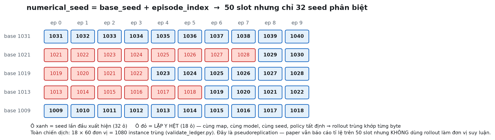
- Vì sao đây là vấn đề: nếu coi 50 rollout là 50 quan sát độc lập thì n bị phồng 1.56 lần, khoảng tin cậy hẹp giả tạo và p-value nhỏ giả tạo.
- Paper xử lý thế nào: tỉ lệ vẫn báo cáo trên 50 slot (đúng như đã chạy), nhưng suy luận dùng 20 đơn vị (map × training run); Wilson CI chỉ được gọi là “descriptive”.
- Cách sửa nếu làm lại: chọn 5 base seed cách nhau ≥ 10 (ví dụ 1009, 1019, 1029, 1039, 1049) → 50 slot với 50 seed phân biệt, không đổi số lượng rollout.
- Lưu ý tinh tế: cùng một numerical seed ở hai unit KHÁC nhau vẫn là hai điều kiện khác nhau (map hoặc model khác). Chỉ trùng lặp bên trong một unit. Trường
full_condition_hash = map_hash | controller | numerical_seedtrong ledger nắm đúng điều này.
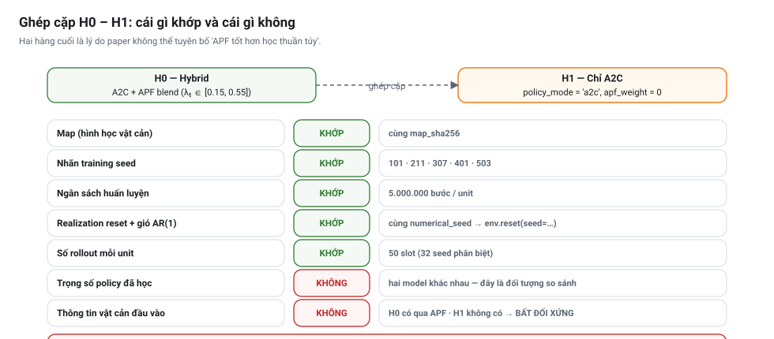
Vì sao H2 không có lặp huấn luyện thật
H2 là APF thuần, không học (model = None, timesteps = 0). Năm nhãn seed mỗi map chỉ để giữ cấu trúc sổ sách — chúng là các lượt đánh giá lặp lại của MỘT bộ điều khiển cố định, không phải năm mẫu độc lập. Không được dùng H2 trong bất kỳ suy luận ghép cặp nào.
Vì sao H4 gần như là no-op
Spline tham số hóa từng tọa độ theo chỉ số mẫu chuẩn hóa rồi resample về max(20, N) điểm. Mọi quỹ đạo H0 đều có N ≥ 20 nên số điểm vào = số điểm ra, và spline được đánh giá đúng tại các vị trí tham số cách đều ban đầu. Nó chạy SAU rollout nên không thể đổi action, va chạm hay kết quả: jitter và accel không đổi tới độ chính xác số học.
| Map | Đặc trưng hình học | Vai trò trong lập luận |
|---|---|---|
map-random-01 | Trường vật cản ngẫu nhiên có seed | Điều kiện chung nhất; H1 yếu nhất ở đây (140/250) |
map-corridor-01 | Hành lang tạo bởi các hộp ghép cặp | Ràng buộc ngang lặp lại → phơi bày dao động; 10 failure của H1 đều là va chạm |
map-barrier-01 | Barrier hai phần có khe hở | Kiểm tra khả năng duy trì tiến bộ qua khe; 50 failure của H1 đều là hết giờ |
map-mixed-01 | Barrier + ngẫu nhiên | Trần kết quả của H1 (250/250) → bằng chứng APF KHÔNG cần thiết cho mọi layout |
§10Chỉ số đo và công thức thống kê
Bốn nhóm chỉ số và bốn công cụ suy luận. Chú ý ranh giới giữa MÔ TẢ và SUY LUẬN. §IV-B
10.1 Nhóm chỉ số kết quả rời rạc
p̂ + z²/(2n) ± z · √( p(1−p̂)/n + z²/(4n²) )
CI = ─────────────────────────────────────────────────
1 + z²/n
z = 1.96 (95%) ; n = 1000 ; p̂ = success/1000
H0: p̂ = 1.000 → CI [0.996, 1.000] (chú ý: chặn trên đúng bằng 1)
H1: p̂ = 0.830 → CI [0.805, 0.852]
H2: p̂ = 0.055 → CI [0.042, 0.071]
p̂ ± z√(p̂(1−p̂)/n): Wald sụp đổ khi p̂ gần 0 hoặc 1 (với H0, Wald cho biên độ 0 → CI [1, 1] vô nghĩa). Wilson vẫn hợp lệ ở biên và với n nhỏ. Nhưng paper nhấn mạnh các CI này chỉ MÔ TẢ 1000 rollout — suy luận thật nằm ở kiểm định ghép cặp.10.2 Nhóm chỉ số chất lượng đường bay
E = min( 1 , ‖g − p₀‖ / Σₜ₌₀^{T−1} ‖pₜ₊₁ − pₜ‖ )
tử số = độ dài đường thẳng từ điểm XUẤT PHÁT tới đích
mẫu số = độ dài đường bay thực tế (tổng quãng đường từng bước)
E = 1 ⇔ bay thẳng hoàn toàn ; E càng nhỏ ⇔ càng vòng vèo
CHỈ tính trên các episode THÀNH CÔNG (loại bỏ failure)
- Thiên lệch sống sót: H1 có 170 failure bị loại. So sánh E của H0 với E của một TẬP CON được chọn lọc của H1 (những episode mà H1 vốn đã làm tốt) là so sánh không cân xứng. Paper nêu rõ điều này.
- Chỉ 18/20 cặp dùng được: hai unit không có episode thành công nào ở một trong hai controller (
map-barrier-01/seed401vàmap-random-01/seed307) → không tạo được hiệu ghép cặp. - Kết quả bất ngờ: E của H1 (0.892) hơi CAO hơn H0 (0.883). Khác biệt không có ý nghĩa (p = 0.417) nhưng đủ để paper từ chối tuyên bố “hybrid bay thẳng hơn”.
clearance = min trên toàn bộ đường bay của δₜ (clearance CÓ DẤU tới mặt AABB gần nhất) δ > 0 : ngoài vật cản δ = 0 : chạm mặt δ < 0 : đã xuyên vào trong Bán kính phồng UAV = 0 Khác với dᵢ của APF (đo tới tâm) — xem §6
10.3 Nhóm chỉ số động học (sai phân hữu hạn)
vận tốc ≈ Δp/Δt accel index = mean ‖ Δ²p / Δt² ‖ (m/s²) — đạo hàm bậc 2 jitter = mean ‖ Δ³p / Δt³ ‖ (m/s³) — đạo hàm bậc 3 Δt = 0.1 s ; lấy trung bình trên các bước của episode Δ²pₜ = pₜ₊₁ − 2pₜ + pₜ₋₁ Δ³pₜ = pₜ₊₂ − 3pₜ₊₁ + 3pₜ − pₜ₋₁
- Không phải khả thi về cơ cấu chấp hành (actuator feasibility) — không có giới hạn tốc độ motor hay rate limit.
- Không phải công suất motor hay tiêu thụ năng lượng.
- Không phải độ mượt tư thế (attitude smoothness) — mô hình point-mass không có tư thế.
- Không phải độ thoải mái hay tải khí động; càng không phải bằng chứng “bay được thật”.
So với chuẩn thực sự trong robotics: Minimum-Snap (Mellinger & Kumar 2011) tối ưu jerk/snap của QUỸ ĐẠO THAM CHIẾU kèm ràng buộc động lực học. Ở đây jerk chỉ là chẩn đoán trên quỹ đạo ĐÃ THỰC THI.
10.4 Nhóm công cụ suy luận
Δᵢ = (giá trị của H1 tại unit i) − (giá trị của H0 tại unit i) , i = 1..20 d_z = Δ̄ / s_Δ (hiệu trung bình chia cho độ lệch chuẩn CỦA HIỆU) Quy ước đọc thô: |d_z| ≈ 0.2 nhỏ · 0.5 trung bình · 0.8 lớn · > 1.5 rất lớn success d_z = −0.509 (trung bình, theo hướng H1 kém hơn) accel d_z = +1.07 (lớn) jitter d_z = +1.78 (rất lớn — bằng chứng mạnh nhất của paper) steps d_z = +0.300 (nhỏ) efficiency d_z = +0.156 (rất nhỏ, n = 18) clearance d_z = +0.063 (gần như bằng 0)
- Wilcoxon signed-rank hai phía trên 20 hiệu ghép cặp: phi tham số, không giả định phân phối chuẩn của hiệu — phù hợp vì steps của H1 có phân phối lệch nặng (SD 451.0).
- dz quan trọng hơn p ở đây: với n = 20, p = 0.027 cho success đi kèm dz chỉ −0.509 (hiệu trung bình), trong khi jitter có dz = 1.78 (hiệu rất lớn). Paper vì thế nhấn mạnh “exact p-values and effect sizes” thay vì dán nhãn significant/không.
- Không hiệu chỉnh đa bội: 6 chỉ số thành phần, các outcome chính không được tiền đặc tả như một họ confirmatory → p-value là KHÁM PHÁ. Với Bonferroni (0.05/6 = 0.0083) thì success (p = 0.027) và accel (p = 0.006, sát ngưỡng) sẽ đổi kết luận; jitter (p < 0.001) vẫn vững. Điểm nên thảo luận với sinh viên.
§11Kết quả thực nghiệm
Bảng số liệu chính và biểu đồ. Mọi con số đều tái sinh được từ ledger (69/69 claim đối soát). §V · results/rigorous/canonical/
11.1 Accounting kết quả tổng thể (1000 rollout mỗi cấu hình)
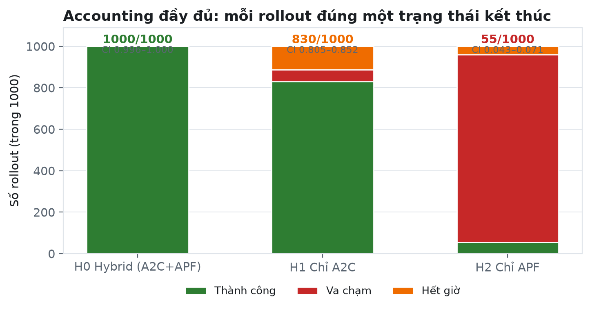
| Controller | Success | SR (Wilson 95% CI) | Collision | Timeout | Efficiency (mean ± SD, chỉ success) |
|---|---|---|---|---|---|
| H0 Hybrid | 1000 | 1.000 (0.996–1.000) | 0 | 0 | 0.883 ± 0.075 |
| H1 A2C-only | 830 | 0.830 (0.805–0.852) | 58 | 112 | 0.892 ± 0.099 |
| H2 APF-only | 55 | 0.055 (0.042–0.071) | 905 | 40 | 0.882 ± 0.041 |
Ở cấp training-run, H1 thấp hơn H0 đúng 17 điểm phần trăm (dz = −0.509, Wilcoxon p = 0.0273, n = 20).
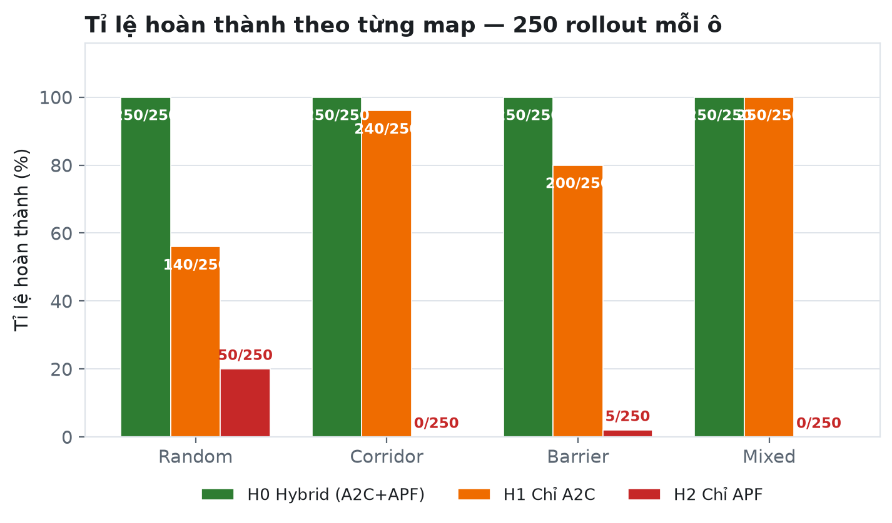
11.2 Cấu trúc thất bại — thông tin quan trọng hơn tỉ lệ thành công
| Map | H1 success | H1 collision | H1 timeout | Cơ chế thất bại suy ra |
|---|---|---|---|---|
| Random | 140 | 48 | 62 | Cả hai cơ chế: vừa đâm vừa quẩn |
| Corridor | 240 | 10 | 0 | Ràng buộc ngang lặp lại → dao động/kém giảm chấn → va chạm |
| Barrier | 200 | 0 | 50 | Có khe hở hình học → không đủ tiến bộ về đích → hết giờ |
| Mixed | 250 | 0 | 0 | APF không cần thiết cho layout này |
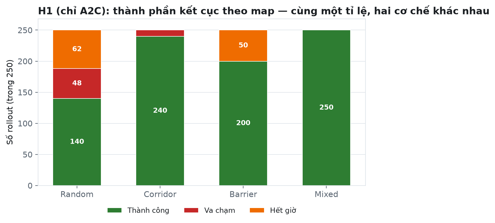
Một can thiệp chỉ giảm va chạm mà không giải quyết được sự trì trệ sẽ KHÔNG cải thiện tỉ lệ hoàn thành ở map barrier — và ngược lại. Nếu chỉ báo cáo “H1 đạt 83%”, thông tin này mất hoàn toàn.
11.3 H2 (chỉ APF) — bảng đầy đủ
| Map | Success | Collision | Timeout |
|---|---|---|---|
| Random | 50 | 190 | 10 |
| Corridor | 0 | 250 | 0 |
| Barrier | 5 | 225 | 20 |
| Mixed | 0 | 240 | 10 |
Nguồn: reproducibility/tables/generated/table_map_outcomes.csv (sinh từ ledger). H2 không bao giờ thành công trên corridor và mixed.
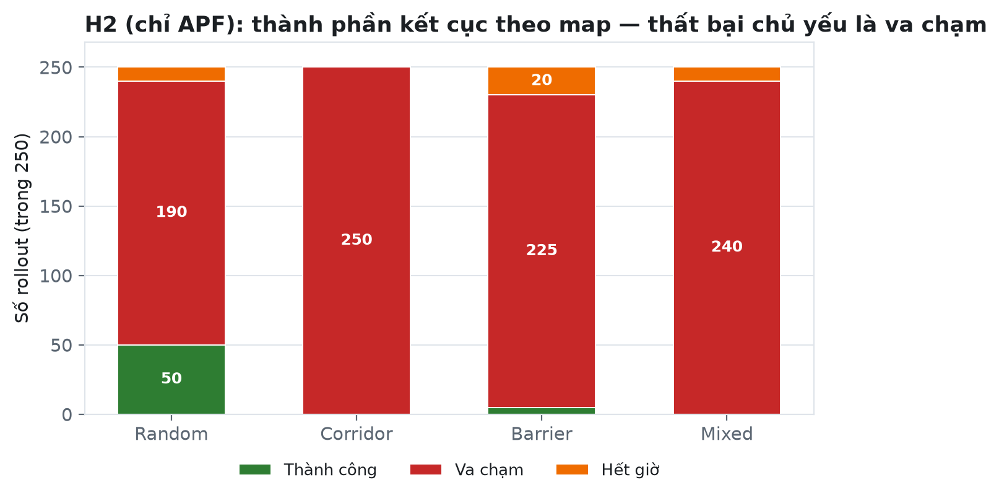
11.4 Chỉ số liên tục: mean ± SD, kèm median để chống diễn giải sai
| Controller | Clearance (m) | Steps (mean ± SD) | Steps (median) | Jitter (m/s³) | Accel (m/s²) |
|---|---|---|---|---|---|
| H0 Hybrid | 7.24 ± 5.24 | 104.4 ± 22.7 | 99 | 28.53 ± 9.03 | 16.08 ± 1.67 |
| H1 A2C-only | 7.77 ± 6.28 | 237.8 ± 451.0 | 78 | 55.33 ± 14.68 | 22.85 ± 7.00 |
| H2 APF-only | 0.76 ± 3.70 | 408.0 ± 338.8 | 311 | 2.21 ± 0.82 | 0.45 ± 0.10 |
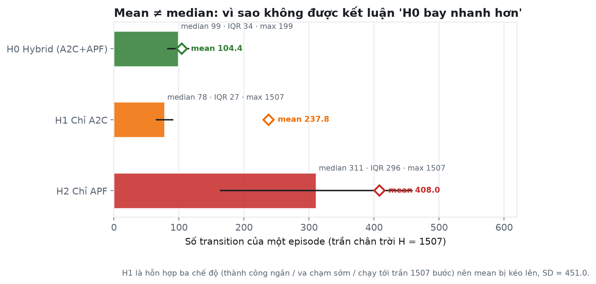
Jitter của H2 thấp nhất (2.21) nhưng đây KHÔNG phải tin tốt
H2 có accel 0.45 m/s² và jitter 2.21 m/s³ — thấp hơn H0 hàng chục lần, nhưng đi kèm 90.5% va chạm và 4% timeout: UAV gần như không di chuyển được hoặc chết sớm. So sánh độ mượt mà KHÔNG điều kiện trên việc hoàn thành nhiệm vụ sẽ đảo ngược hoàn toàn kết luận thực tiễn.
104.4 bước của H0 không phải thời gian bay thật
Tương đương 10.44 s thời gian mô phỏng, nhưng point-mass nhận lệnh lực trực tiếp, dải độ cao chỉ 1 m, và không có động lực học tư thế/chấp hành nào ràng buộc cơ động. Không được đọc thành thời gian bay thực tế.
11.5 Suy luận ghép cặp H1 − H0 trên 20 đơn vị
| Chỉ số | Hiệu trung bình (H1 − H0) | Cohen's dz | Wilcoxon p | n cặp | Kết luận của paper |
|---|---|---|---|---|---|
| Tỉ lệ thành công | −0.17 (−17 điểm %) | −0.509 | 0.0273 | 20 | có bằng chứng H1 kém tin cậy hơn |
| Jitter (m/s³) | +26.80 | 1.78 | < 0.001 | 20 | có bằng chứng H1 biến thiên mạnh hơn (hiệu rất lớn) |
| Acceleration (m/s²) | +6.77 | 1.07 | 0.006 | 20 | có bằng chứng H1 gia tốc lấy mẫu lớn hơn |
| Efficiency (chỉ success) | +0.0142 | 0.156 | 0.417 | 18 | không ủng hộ |
| Clearance nhỏ nhất (m) | +0.533 | 0.063 | 0.956 | 20 | không ủng hộ |
| Số bước (steps) | +133.37 | 0.300 | 0.123 | 20 | không ủng hộ (SD 451 do trộn timeout dài) |
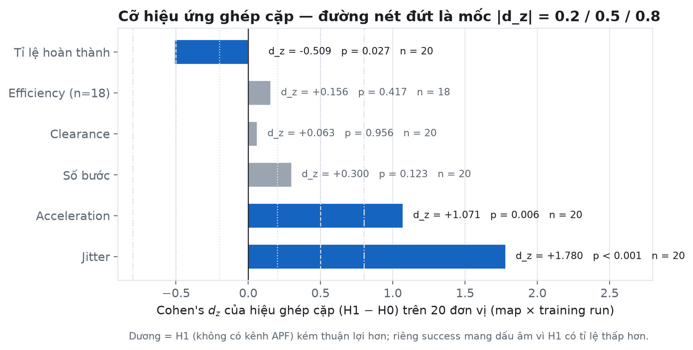
§12Diễn giải cơ chế: cái gì giải thích được, cái gì chỉ là giả thuyết
Paper phân biệt rất rõ ba mức: kết quả quan sát, giải thích cơ chế có bằng chứng, và giả thuyết cần đo thêm. §V-D · §VI
| Quan sát | Giải thích đề xuất | Trạng thái bằng chứng |
|---|---|---|
| H0 jitter thấp hơn H1 rõ rệt (dz = 1.78) | Hỗn hợp lồi với λ tăng dần tới 0.55 ở vùng cuối làm dịu các thay đổi lệnh lớn của A2C khi tiếp cận đích | giả thuyết chưa log tách lệnh A2C/APF nên không chứng minh được cơ chế |
| H2 va chạm 90.5% | APF kích hoạt theo khoảng cách tới TÂM trong bán kính 6 m nên không phản ứng khi ở gần mặt một khối lớn; cộng thêm local minima kinh điển của trường thế năng | hợp lý về cơ chế nhưng chưa chứng minh bằng force-field ablation riêng |
| H1 thất bại ở barrier toàn bộ là timeout | Barrier có khe hở hình học nên không phải vấn đề xâm nhập không an toàn, mà là không duy trì đủ tiến bộ về đích | ủng hộ bởi dữ liệu (0 collision, 50 timeout) |
| H1 thất bại ở corridor toàn bộ là va chạm | Ràng buộc ngang lặp lại phơi bày lệnh dao động hoặc giảm chấn kém, dù hướng đích đơn giản | ủng hộ bởi dữ liệu (10 collision, 0 timeout) |
| H1 có efficiency và clearance mean CAO hơn H0 một chút | Không phải hybrid kém hơn, mà là thiên lệch sống sót: chỉ so trên tập con H1 đã thành công | giải thích phương pháp đã kiểm chứng bằng p = 0.417 và 0.956 |
| H0 đạt 100% trên mọi map | Kênh APF cộng hình học vật cản mang lại độ tin cậy nhất quán trong giao thức đã đánh giá | có bằng chứng trong phạm vi 4 map; không phải bảo đảm an toàn tổng quát |
Tại khoảng cách danh định 335.4 m, λ bị clip xuống sàn 0.15. Khi vào trong 255 m, lịch không bị chặn nữa; tới 135 m nó đạt
trần 0.55. Như vậy đóng góp giải tích yếu nhất ở pha đầu và mạnh nhất ở pha cuối. Mặt khác, lực đẩy theo tâm chỉ hoạt động
trong 6 m quanh tâm vật cản — nghĩa là phần lớn thời gian hành trình, APF thực chất chỉ là lực hút không đổi 0.04 về phía đích.
Hai facts này gợi ý giá trị của APF nằm ở pha tiếp cận và ở các khe hẹp. Muốn khẳng định, cần log riêng
aₜᴬ²ᶜ và aₜᴬᴾᶠ theo thời gian rồi so sánh biên độ thay đổi lệnh — việc mà paper xếp vào future work.
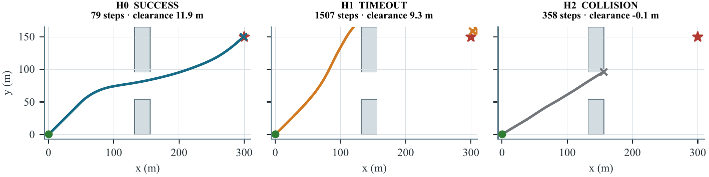
§13Threats to validity — bảng đầy đủ 12 mục
Paper có một mục Threats riêng; bảng này gộp thêm các mục từ reproducibility/docs/limitations.md. §VII
| Nhóm | Mối đe dọa cụ thể | Cách paper xử lý / hệ quả diễn giải |
|---|---|---|
| Internal — quy kết nguyên nhân | H0 nhận hình học vật cản qua APF, observation của A2C thì không → H0−H1 đo cả kênh APF LẪN đầu vào thông tin đặc quyền | Không kết luận “APF tính toán tốt hơn”; cần H1b có obstacle feature tương xứng |
| Internal — cơ chế | Không log tách lệnh aᴬ²ᶜ và aᴬᴾ nên không chứng minh được vì sao jitter giảm | Giải thích theo lịch λ chỉ là giả thuyết chẩn đoán |
| Measurement — độ đo | Accel/jerk là sai phân hữu hạn của vị trí lấy mẫu, không phải tải khí động, công suất motor, độ mượt tư thế hay comfort | Không suy ra “bay được thật” (flyability) |
| Measurement — khoảng cách | APF dùng khoảng cách tới TÂM AABB; reward và clearance dùng khoảng cách BỀ MẶT có dấu | Hai đại lượng khác nhau, không hoán đổi; APF under-repel với khối rộng |
| Measurement — code chết | Độ cao bị clamp về [5, 6] trước khi tính reward → số hạng phạt r_z không bao giờ kích hoạt | Khai báo rõ thay vì âm thầm bỏ |
| Statistical — n | n = 20 cặp (18 với efficiency); 6 kiểm định không hiệu chỉnh đa bội | p-value là khám phá; nhấn mạnh p chính xác + cỡ hiệu ứng |
| Statistical — pseudoreplication | 50 slot đánh giá/unit chỉ có 32 numerical seed phân biệt → 18 slot lặp y hệt (1080 instance trùng đã kiểm chứng) | Tỉ lệ vẫn báo cáo trên 50 slot; rollout KHÔNG được coi là đơn vị độc lập |
| Statistical — survivorship | Efficiency và clearance chỉ tính trên episode thành công → loại bỏ 170 failure của H1 | Không so sánh “đường bay đẹp hơn” giữa H0 và tập con được chọn lọc của H1 |
| Reproducibility | PyTorch không được seed tường minh, không có cờ determinism → huấn luyện lại không bitwise | Tái lập từ ledger là chính xác; retrain chỉ “so sánh được về phân phối” |
| External | 4 map AABB 300 m cố định, một quá trình gió duy nhất, không có điều kiện no-wind hay mức gió khác, không held-out map | Không kết luận robustness theo gió; không tổng quát hóa layout |
| External — mô hình | Point-mass, không tư thế/rotor/tốc độ cơ cấu chấp hành; dải độ cao chỉ 1 m; trạng thái quan sát sạch | Lệnh lực có thể đổi nhanh hơn nhiều so với multirotor thật |
| Scope | Chỉ có bằng chứng cho H0/H1 (A2C) và H2 (không học); H3 (no-wind), H5 (strong-wind), map-random-02 đã định nghĩa nhưng loại khỏi tập bằng chứng | Không xếp hạng với PPO, SAC, RRT |
§14Kết luận của paper và hướng tương lai
Đúng ba câu kết luận mà dữ liệu ủng hộ. §VIII
- H0 hoàn thành toàn bộ 1000 rollout, so với 830 của cấu hình chỉ A2C khớp ngân sách–giao thức và 55 của điều khiển chỉ APF.
- Phân tích ghép cặp theo đơn vị (map × training run) ủng hộ độ tin cậy hoàn thành CAO HƠN và biến thiên quỹ đạo lấy mẫu THẤP HƠN, nhưng KHÔNG ủng hộ khác biệt về hiệu suất đường bay thành công, clearance hay độ dài episode.
- Kết quả phản ánh kênh “APF + hình học vật cản” đã đánh giá, KHÔNG phải một thuật toán học mới hay một planner vượt trội nói chung.
| # | Hướng tương lai | Vấn đề nó giải quyết | Chi phí ước tính |
|---|---|---|---|
| 1 | Đánh giá trên map held-out | External validity: hiện chỉ có 4 map cố định | Thấp — chỉ cần chạy eval, không retrain |
| 2 | Cho policy quan sát vật cản tương xứng (H1b) | Bất đối xứng thông tin — giới hạn chi phối toàn bài | Trung bình — retrain, đổi observation space |
| 3 | APF dùng khoảng cách bề mặt thay vì tâm | Lỗi under-repel giải thích cho H2 và có thể cải thiện H0 | Trung bình — sửa apf_action, retrain |
| 4 | Nhiều mức gió (kể cả no-wind = H3 đã định nghĩa) | Tiêu đề nói “Wind-Perturbed” nhưng chưa có can thiệp mức gió | Thấp–trung bình — H3/H5 đã có trong manifest |
| 5 | Log tách lệnh A2C và APF | Chứng minh cơ chế giảm jitter thay vì chỉ giả thuyết | Rất thấp — thêm instrumentation khi eval |
| 6 | Mô hình fidelity cao hơn hoặc hardware-in-the-loop | Khoảng cách point-mass → multirotor thật (tư thế, rotor, rate limit) | Cao |
§15Reproducibility & audit trail — phần đáng học nhất của dự án
Gói reproducibility/ là điểm khác biệt thực sự so với mặt bằng paper hội nghị: mọi con số đều tái sinh từ một ledger có checksum.
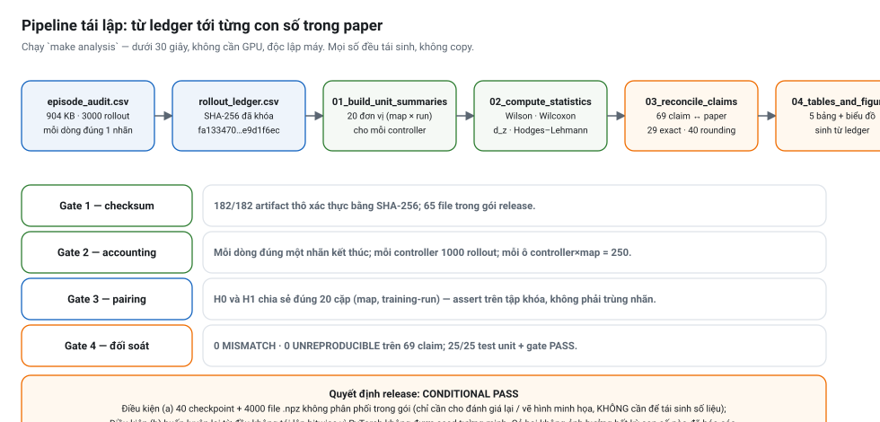
make analysis: dưới 30 giây, không GPU, độc lập máy.| Gate kiểm tra | Kết quả | Ý nghĩa |
|---|---|---|
| Artifact thô xác thực bằng SHA-256 | PASS 182/182 | Không file kết quả nào bị thay đổi âm thầm |
| Mỗi dòng ledger đúng một trạng thái kết thúc | PASS 0 vi phạm | Accounting đầy đủ, không rollout nào “mất tích” |
| Số rollout mỗi controller = 1000 | PASS | Đúng cardinality thiết kế |
| Mỗi ô controller × map = 250 | PASS | Thiết kế cân bằng, không ô nào thiếu dữ liệu |
| Unit ghép cặp H0/H1 chia sẻ map + training-run ID | PASS 20 cặp thật | Ghép cặp hợp lệ, không phải ghép nhãn trùng |
| Bảng/biểu đồ sinh ra TỪ ledger | PASS (analysis/04) | Không có số liệu gõ tay vào bảng |
| Mọi claim số học EXACT/ROUNDING/SUPPORTED | PASS | Paper khớp dữ liệu tới 2 chữ số thập phân |
| Không có MISMATCH / UNREPRODUCIBLE | PASS | Không có con số nào không tái sinh được |
| Smoke test trong môi trường sạch | PASS | Cài đặt được từ đầu bằng Dockerfile/environment.yml |
| Không có secret/key/credential trong release | PASS | An toàn để công khai |
Vì sao là CONDITIONAL PASS chứ không phải PASS
- Lý do (a): 40 checkpoint và 4000 file quỹ đạo
.npzkhông được phân phối trong gói (quá lớn). Người tái lập phải lấy từ research repo và đối chiếucheckpoint_sha256. Chúng chỉ cần cho việc đánh giá lại và vẽ hình minh họa — KHÔNG cần để tái sinh bất kỳ con số nào trong paper. - Lý do (b): huấn luyện lại từ đầu không tái lập bitwise (PyTorch không seed tường minh, không có cờ determinism). Đây là lựa chọn có ý thức và đã khai báo.
- Điều không bị ảnh hưởng: tái lập phân tích từ
data/raw/rollout_ledger.csvlà CHÍNH XÁC và độc lập máy, chạy dưới 30 s với ~1 GB RAM, không cần GPU. Đánh giá lại từ checkpoint đã lưu là tất định (dung sai ≤ 1e−6 cho chỉ số liên tục).
Traceability: 21 tuyên bố trong paper đã được đối chiếu với code (trích 10 mục tiêu biểu)
| # | Tuyên bố trong paper | Bằng chứng code | Kết luận |
|---|---|---|---|
| 1 | Observation đúng 12 chiều | DroneEnv3D._obs = hstack(state[6], goal-disp[3], wind[3]); observation_space = Box((12,)) | CONFIRMED |
| 2 | A2C không thấy hình học/khoảng cách vật cản | _obs chỉ có pos, vel, goal-displacement, wind | CONFIRMED |
| 6 | Clip theo từng thành phần, 12 N mỗi trục | np.clip(action, −1, 1) * self.max_f với max_f = 12.0 | CONFIRMED |
| 8 | Drag tác dụng lên vận tốc tương đối | acceleration = (force − kd*(velocity − wind))/mass | CONFIRMED |
| 9 | Euler bán ẩn | velocity += a*dt rồi x += vx*dt dùng vận tốc MỚI | CONFIRMED |
| 11 | Va chạm quét đoạn (swept) | swept_aabb_collision(previous_pos, pos, o, radius) — phép thử slab 3 trục | CONFIRMED |
| 14 | Lực đẩy APF dùng khoảng cách tới TÂM AABB | center = (...)/2 ; d = norm(pos − center) | CONFIRMED bất đối xứng với #13 |
| 17 | Lịch blend tại 335.4 / 255 / 135 / 0 m | λ = clip(1 − d/300, 0.15, 0.55) → 0.15, 0.15, 0.55, 0.55 | CONFIRMED |
| 19 | Phạt độ cao bất hoạt sau clamp | z bị clamp về [5,6] trước khi reward đọc st[2] → cả hai nhánh phạt không tới được | CONFIRMED INACTIVE |
| 20 | Công thức chân trời và giá trị danh định | max_steps = int((D_xy/(5.0·dt))·1.8) + 300; D_xy = 335.41 → H = 1507 | CONFIRMED |
Bảng đầy đủ 21 mục: reproducibility/docs/implementation_traceability.md.
Kiểm tra tự động: tests/test_controller_semantics.py, test_dynamics_and_collision.py, test_reward_and_horizon.py.
README.mdở gốc repo nghiên cứu mô tả MÔ HÌNH CŨ: quãng đường 700 m, segment curriculum, state 6 chiều, gió cộng trực tiếp vào gia tốc, ngưỡng đến đích 2.0 m. Paper canonical dùng 300 m, observation 12 chiều, gió trong drag tương đối, ngưỡng 3 m. KHÔNG dùng README gốc để đối chiếu công thức.README_PAPER_FINAL.mdvàresults/rigorous/canonical/qa_status.jsonvẫn ghi “results pending / chưa có kết quả 5.000.000 bước” — đã lỗi thời, vì 80 thư mụcsteps5000000đã hoàn tất vàjob_full.jsonbáocomplete.- Các bản build cũ với tiêu đề khác (
FirstSubmission/,final_build/“Auditable…”,self_review_build/,TestFolder/) đã bị supersede — chỉ đọc để xem lịch sử, không trích dẫn.
Mã nguồn Mermaid của hai sơ đồ (để chỉnh sửa trong mermaid.live hoặc trình soạn thảo)
flowchart TD
subgraph CFG["Configuration"]
H0["H0 Hybrid (A2C+APF)"]
H1["H1 chỉ A2C"]
H2["H2 chỉ APF"]
end
CFG --> MAP["4 map 300m: random / corridor / barrier / mixed"]
MAP --> RUN["5 training run độc lập mỗi map (seed 101..503, 5M bước)"]
RUN --> SLOT["50 eval seed slot mỗi unit (base+episode)"]
SLOT --> ROLL["1 rollout tất định"]
SLOT -. "chỉ 32 seed phân biệt" .-> DUP["18 slot lặp y hệt = pseudoreplication"]
RUN ==> INF["ĐƠN VỊ SUY LUẬN: 20 cặp (map x training run)"]
flowchart LR A["episode_audit.csv (3000 rollout)"] --> B["rollout_ledger.csv (SHA-256 khóa)"] B --> C["01_build_unit_summaries"] C --> D["02_compute_statistics"] D --> E["03_reconcile_manuscript_claims (69 claim)"] E --> F["04_generate_tables_and_figures"] G["Gate: checksum 182/182"] -.-> B H["Gate: accounting 1 nhãn/dòng"] -.-> A I["Gate: pairing 20 cặp thật"] -.-> D J["Gate: 0 MISMATCH"] -.-> E F --> K["bảng + biểu đồ trong paper"]
§16Thuật ngữ, câu hỏi ôn tập và bài học phương pháp luận
Ba khối phụ lục dùng cho giảng dạy: glossary tra cứu nhanh, 18 câu hỏi theo ba mức, và bảng bài học nên học theo / nên tránh.
Glossary Anh–Việt (17 thuật ngữ)
| Thuật ngữ | Tiếng Việt / viết tắt | Định nghĩa dùng trong paper |
|---|---|---|
| Advantage Actor–Critic (A2C) | A2C | Biến thể actor–critic đồng bộ của A3C: dùng advantage  = Q − V để giảm phương sai gradient chính sách |
| Artificial Potential Field | APF / trường thế năng nhân tạo | Điều khiển phản xạ: lực hút về đích + lực đẩy quanh vật cản, tính online, chi phí thấp |
| Axis-Aligned Bounding Box | AABB | Hộp bao chữ nhật có các cạnh song song trục tọa độ — biểu diễn vật cản trong mô phỏng |
| Component evaluation | Đánh giá theo thành phần | Đo đóng góp của MỘT thành phần trong một implementation cố định, thay vì đề xuất hệ thống mới |
| Deterministic rollout | Lượt chạy tất định | Đánh giá dùng model.predict(deterministic=True) — lấy mode của phân phối thay vì lấy mẫu |
| Finite difference | Sai phân hữu hạn | Xấp xỉ đạo hàm bằng hiệu các mẫu liền kề: Δp/Δt, Δ²p/Δt², Δ³p/Δt³ |
| Information asymmetry | Bất đối xứng thông tin | Hai cấu hình so sánh không nhận cùng một đầu vào (ở đây: hình học vật cản) |
| Jitter | Chỉ số biến thiên bậc 3 | mean‖Δ³p/Δt³‖ (m/s³) — độ “gằn” của quỹ đạo lấy mẫu |
| Matched pair | Cặp ghép | Hai đơn vị chia sẻ map, ngân sách huấn luyện và realization đánh giá → so sánh ghép cặp |
| Pseudoreplication | Lặp giả | Đếm nhiều lần quan sát không độc lập như thể chúng độc lập, làm phồng n và thu nhỏ p |
| Slab test | Phép thử lát cắt | Giao đoạn thẳng với AABB bằng cách cắt 3 dải trục — phát hiện va chạm kể cả khi bước nhảy dài |
| Stationary variance | Phương sai dừng | Phương sai không đổi theo thời gian của quá trình AR(1) khi hệ số nhiễu được chuẩn đúng |
| Success rate (SR) | Tỉ lệ hoàn thành | Số episode về đích (cách đích < 3 m và không va chạm) / tổng số episode |
| Swept collision | Va chạm quét | Kiểm tra cả đoạn pₜ → pₜ₊₁ thay vì chỉ điểm cuối, chống hiện tượng “xuyên hầm” vật cản |
| Wilson score interval | Khoảng tin cậy Wilson | Khoảng tin cậy cho tỉ lệ nhị phân, bền khi p gần 0/1 hoặc n nhỏ — dùng làm mô tả, không dùng để suy luận |
| Wilcoxon signed-rank | Kiểm định hạng có dấu | Kiểm định phi tham số cho hiệu ghép cặp, không giả định phân phối chuẩn |
| Cohen's dz | Cỡ hiệu ứng ghép cặp | Δ̄/s_Δ: hiệu trung bình chia cho độ lệch chuẩn của hiệu — cho biết độ LỚN, không chỉ độ hiếm |
18 câu hỏi ôn tập cho sinh viên (ba mức)
Mức 1 kiểm tra đọc hiểu công thức. Mức 2 yêu cầu tính toán hoặc suy luận từ thiết kế. Mức 3 là câu hỏi phản biện kiểu reviewer — nên dùng cho buổi seminar.
| Mức | Câu hỏi |
|---|---|
| 1 — Hiểu | Observation của A2C gồm những khối 3 chiều nào? Vì sao dùng (g − pₜ) thay vì g? |
| 1 — Hiểu | Hành động của policy là gia tốc hay lực? Giới hạn 12 N áp dụng theo trục hay theo chuẩn vector? |
| 1 — Hiểu | Viết lại công thức tính gia tốc và giải thích vì sao gió xuất hiện trong số hạng drag chứ không phải cộng thẳng vào vị trí. |
| 1 — Hiểu | Tính H cho map 300 m và cho biết một episode kéo dài bao nhiêu giây mô phỏng khi dùng hết chân trời. |
| 1 — Hiểu | λₜ bằng bao nhiêu khi UAV cách đích 335.4 m, 255 m, 180 m và 135 m? Ý nghĩa điều khiển của lịch này? |
| 2 — Vận dụng | Một khối AABB cạnh 20 m có tâm cách UAV 12 m. Tính lực đẩy APF và giải thích vì sao kết quả này nguy hiểm. |
| 2 — Vận dụng | Chứng minh rằng với hệ số 1.2·√(1−φ²) thì phương sai dừng của quá trình gió giật bằng 1.2². |
| 2 — Vận dụng | Vì sao số hạng phạt độ cao r_z không bao giờ kích hoạt? Muốn nó hoạt động thì phải đổi gì trong thứ tự tính toán? |
| 2 — Vận dụng | Vì sao efficiency chỉ có 18 cặp ghép thay vì 20? Điều này tạo ra thiên lệch gì? |
| 2 — Vận dụng | Jitter của H2 (2.21 m/s³) thấp hơn H0 (28.53 m/s³). Vì sao KHÔNG được kết luận H2 bay mượt hơn? |
| 2 — Vận dụng | Mean steps của H1 là 237.8 còn median là 78. Giải thích khoảng cách này bằng cấu trúc kết quả. |
| 3 — Phản biện | H0 thắng H1 có chứng minh được “APF tốt hơn học thuần túy” không? Chỉ ra đúng một thí nghiệm bổ sung sẽ trả lời được câu hỏi đó. |
| 3 — Phản biện | Vì sao paper không hiệu chỉnh đa bội cho 6 kiểm định? Lập luận bảo vệ và lập luận phản đối cách làm này. |
| 3 — Phản biện | Tiêu đề có “Wind-Perturbed” nhưng không có điều kiện no-wind. Nếu bạn là reviewer, bạn sẽ yêu cầu gì? |
| 3 — Phản biện | H2 thua thảm hại (905/1000 va chạm). Điều này nói lên giới hạn của APF hay giới hạn của CÀI ĐẶT APF? Phân biệt hai khả năng. |
| 3 — Phản biện | 50 slot đánh giá chỉ có 32 seed phân biệt. Nếu sửa giao thức, bạn chọn 5 base seed cách nhau bao nhiêu để loại trùng lặp mà vẫn giữ 50 slot? |
| 3 — Phản biện | Vì sao H4 (spline) được giữ lại trong paper dù nó gần như không tạo bằng chứng? Giá trị khoa học của việc công bố một kết quả “no-op” là gì? |
| 3 — Phản biện | Xếp 4 cấu hình H0, H1, H2 và một PPO giả định theo độ tin cậy của bằng chứng hiện có. Giải thích vì sao PPO không được xếp hạng. |
Bài học phương pháp luận: nên học theo gì, nên tránh gì
| Loại | Thực hành | Vì sao quan trọng |
|---|---|---|
| Học theo | Khai báo bất đối xứng thông tin ngay trong abstract | Biến điểm yếu thành phạm vi diễn giải rõ ràng → reviewer khó bắt bẻ quá mức |
| Học theo | Báo cáo cả kết quả KHÔNG có ý nghĩa (efficiency, clearance, steps) | Chống thiên lệch công bố; tăng độ tin cậy của các kết quả có ý nghĩa |
| Học theo | Chọn đúng đơn vị suy luận (20 cặp) thay vì 1000 rollout | Tránh pseudoreplication — lỗi phổ biến nhất trong paper RL ứng dụng |
| Học theo | Accounting đầy đủ: mỗi episode đúng một trạng thái, collision ưu tiên trước success | Không có rollout nào “mất tích” khỏi mẫu số |
| Học theo | Tách bạch mô tả (Wilson CI) và suy luận (Wilcoxon ghép cặp) | Khoảng tin cậy không bị hiểu nhầm thành kiểm định |
| Học theo | Công bố số hiệu ứng dz kèm p | Người đọc đánh giá được độ lớn, không chỉ độ hiếm |
| Học theo | Đối soát từng con số trong paper với ledger (69 claim) | Chuẩn FAIR: mọi số đều tái sinh được, không copy |
| Học theo | Tự chỉ ra code chết (r_z) và no-op (H4) | Trung thực implementation-level — đúng tinh thần Henderson 2018 |
| Tránh | Để tài liệu trạng thái cũ mâu thuẫn với kết quả mới | Người đọc/reviewer vào repo sẽ mất niềm tin trước khi đọc paper |
| Tránh | APF dùng khoảng cách tới tâm nhưng mô tả như thể là clearance bề mặt | Hai đại lượng khác nhau; nhầm lẫn này làm sai lệch diễn giải H2 |
| Tránh | Không seed tường minh PyTorch | Mất khả năng tái lập bitwise khi huấn luyện lại |
| Tránh | Thiết kế slot seed chồng lấn (50 → 32 seed thật) | Phồng mẫu số, phải khai báo pseudoreplication |
| Tránh | Giữ nhiều bản build/tiêu đề phân kỳ trong cùng một cây thư mục | Rủi ro nộp nhầm bản đã supersede |
| Tránh | Nói “quỹ đạo mượt hơn” mà chỉ đo sai phân vị trí | Cần command trace hoặc mô hình chấp hành để nói về độ mượt thực sự |
Tài liệu tham khảo của paper (20 nguồn)
- Khatib, O. (1986). Real-Time Obstacle Avoidance for Manipulators and Mobile Robots. IJRR 5(1):90–98. — nguồn gốc APF.
- LaValle, S. M. (1998). Rapidly-Exploring Random Trees: A New Tool for Path Planning. Iowa State Univ. TR.
- Karaman, S. & Frazzoli, E. (2011). Sampling-Based Algorithms for Optimal Motion Planning. IJRR 30(7):846–894.
- Mnih, V. và cs. (2016). Asynchronous Methods for Deep Reinforcement Learning (A3C). ICML 1928–1937.
- Schulman, J. và cs. (2017). Proximal Policy Optimization Algorithms. arXiv:1707.06347.
- Haarnoja, T. và cs. (2018). Soft Actor-Critic. ICML 1861–1870.
- Henderson, P. và cs. (2018). Deep Reinforcement Learning That Matters. AAAI 32(1). — lý do nhấn mạnh implementation alignment.
- Lillicrap, T. P. và cs. (2016). Continuous Control with Deep Reinforcement Learning (DDPG). ICLR.
- Dulac-Arnold, G. và cs. (2021). Challenges of Real-World Reinforcement Learning. Machine Learning 110:2419–2468.
- Tobin, J. và cs. (2017). Domain Randomization for Transferring DNNs to the Real World. IROS 23–30.
- Mellinger, D. & Kumar, V. (2011). Minimum Snap Trajectory Generation and Control for Quadrotors. ICRA 2520–2525. — chuẩn “độ mượt” thực sự.
- O'Connell, M. và cs. (2022). Neural-Fly Enables Rapid Learning for Agile Flight in Strong Winds. Science Robotics 7(66).
- Shi, G. và cs. (2021). Learning Disturbance-Aware Trajectory Tracking for Quadrotors. IEEE RA-L 6(2):2739–2746.
- Ma, Q. và cs. (2024). DRL-Based Wind Disturbance Rejection Control Strategy for UAV. Drones 8(11):632.
- Zheng, L. và cs. (2025). UAV Path Planning in Complex Urban Environments: Review. Sensors 25(13):4142.
- Li, X. và cs. (2024). G-APF: RRT-Guided Artificial Potential Field Path Planning for UAVs. Drones.
- Wilson, E. B. (1927). Probable Inference, the Law of Succession, and Statistical Inference. JASA 22(158):209–212. — khoảng tin cậy Wilson.
- Jin, F. và cs. (2025). A New Hybrid RL with APF Method for UAV Target Search. Sensors 25(9):2796.
- Xiao, B. và cs. (2025). Addressing Local Minima in Path Planning for Drones with RL-Based Vortex APF. Machines 13(7):600.
- Lee, H. và cs. (2025). Synergistic Multi-UAV Path and Surveillance Planning Using APF-Enhanced PPO. AIAA SciTech.
Tệp nguồn trong repo này
| Đường dẫn | Nội dung |
|---|---|
paper/latex/vnict_hybrid_main.tex | Nguồn LaTeX canonical của paper (IEEEtran conference, 300 dòng) |
paper/pdf/Component-Evaluation-of-Hybrid-A2C-APF.pdf | PDF đã build, 7 trang (giới hạn 8 trang), metadata Title khớp tiêu đề |
paper/latex/figures/ | 5 figure gốc dạng PDF + PNG + SVG dùng cho trang này |
reproducibility/ | Gói tái lập: ledger + SHA-256, analysis 01→04, docs, reports, tests, Dockerfile, CITATION.cff |
reproducibility/tables/generated/ | 5 bảng số liệu sinh từ ledger — nguồn của MỌI biểu đồ trong trang này |
site/tools/build_assets.py | Script sinh toàn bộ biểu đồ (matplotlib) và sơ đồ (SVG) — chạy lại bằng python site/tools/build_assets.py |
teaching/canvas/*.canvas.tsx | Bản Canvas tương tác của cùng nội dung (mở trong Qoder IDE) |